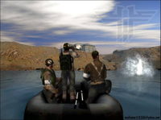
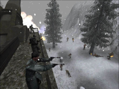

Wolfenstein Enemy Territory
Dieser Artikel wurde für die folgenden Ubuntu-Versionen getestet:
Dieser Artikel ist mit keiner aktuell unterstützten Ubuntu-Version getestet! Bitte diesen Artikel testen und das getestet-Tag entsprechend anpassen.
Zum Verständnis dieses Artikels sind folgende Seiten hilfreich:
Wolfenstein: Enemy Territory  ist ein kostenloser Team-Shooter mit Multiplayer-Modus. Das Spiel wurde parallel für Windows und Linux entwickelt. Ursprünglich sollte Wolfenstein: Enemy Territory ein kommerzielles Spiel mit einem Single- und Multiplayer-Modus werden. Da aber der Singleplayer-Modus nicht voran kam, beschränkte man sich auf den Multiplayer-Modus. Weil sich dieser finanziell nicht lohnte, kann man das Spiel nun kostenlos aus dem Internet herunterladen und spielen.
ist ein kostenloser Team-Shooter mit Multiplayer-Modus. Das Spiel wurde parallel für Windows und Linux entwickelt. Ursprünglich sollte Wolfenstein: Enemy Territory ein kommerzielles Spiel mit einem Single- und Multiplayer-Modus werden. Da aber der Singleplayer-Modus nicht voran kam, beschränkte man sich auf den Multiplayer-Modus. Weil sich dieser finanziell nicht lohnte, kann man das Spiel nun kostenlos aus dem Internet herunterladen und spielen.
Das Spiel setzt auf (kostenlose) Online-Gefechte. Dabei sucht sich jeder Spieler eine Rolle aus (Kämpfer, Munitionsträger, Sanitäter, Scharfschütze etc.). Es gilt dann verschiedene Aufträge zu erfüllen bzw. dies zu verhindern. Dabei sind die Missionen so ausgelegt, dass man im Team zusammen arbeiten muss, da sonst die Erfüllung des Auftrags nicht möglich ist. Hat man z.B. keinen Techniker im Team, dann kriegt man die Tür zum Feindlager eventuell nicht auf und hat gar nichts von seiner hohen Feuerkraft oder seinem Scharfschützen.
|  |  |
| © id Software | © id Software |
Installation¶
Das Spiel kann unter anderem hier heruntergeladen werden:
Enemy Territory Linux 2.60 Full Install
 (via BitTorrent)
(via BitTorrent)Über die http://wiki.ubuntuusers.de/GetDeb Quellen
Es handelt sich um einen Loki Installer [3].
Wenn das Spiel als Root installiert wurde, kann es mit dem Befehl et gestartet werden [6].
32-Bit-Bibliothek für die 64-Bit-Version¶
 mit
mit Patch (optional)¶
Des weiteren ist es noch sinnvoll, auf die aktuelle Version 2.60b zu patchen. Dazu lädt man sich das Patch-Archiv herunter und entpackt es [5]. Danach wechselt man in einem Terminal [1] in das entpackte Verzeichnis Enemy Territory 2.60b und kopiert die Daten mittels
sudo cp linux/et.x86 /usr/local/games/enemy-territory/et.x86 sudo cp linux/etded.x86 /usr/local/games/enemy-territory/etded.x86
in das ET-Verzeichnis, wobei der Pfad zum Spiel evtl. angepasst werden muss.
Punkbuster aktualisieren¶
ET wird warscheinlich nichtmehr von punkbuster bzw evenbalance unterstützt. Daher besser Punkbusterdateien über etkey.org beziehen. PunkBuster ist ein Anti-Cheater-Tool. Es wird von vielen Spielen (u.a. auch ET) verwendet, um sicherstellen zu können, dass nur die Original-Spieledateien verwendet werden und nicht (durch Cracks o. ä.) verändert wurden. Installationen, die diese Integrität verletzen, werden von vielen öffentlichen Spieleservern ausgeschlossen. Punkbuster muss regelmäßig aktualisiert werden, damit auch neue Cheats zuverlässig erkannt werden können. Installationen mit nicht aktualisiertem PunkBuster werden deshalb ebenso von vielen öffentlichen Spieleservern ausgeschlossen.
Evenbalance hat den Support für dieses Spiel eingestellt. Das zuletzt aktuelle Datenpaket, das für den Besuch von Punkbuster geschützten Servern benötigt wird, ist unter etkey.org erhältlich. Die Datei etkey herunterladen und in den Ordner ~/.etwolf/etmain/ kopieren.
Problembehebung¶
Bildschirmauflösung¶
Für Benutzer eines Breitbildmonitors ist standardmäßig keine passende Auflösung im Spiel hinterlegt. Um zum Beispiel eine Auflösung von 1280x800 nutzen zu können, bearbeitet man die Datei ~/.etwolf/etmain/etconfig.cfg mit einem Editor [2] und ändert folgenden Werte:
seta r_customheight "800" seta r_customwidth "1280" seta r_mode "-1"
Danach darf man die Auflösung im Spiel direkt aber nicht mehr ändern.
Kein Sound¶
Sollte der Sound im Spiel fehlen, gibt es mehrere Lösungsmöglichkeiten, wobei der 5. Lösungsansatz zu bevorzugen ist:
1. Möglichkeit¶
In GNOME kann man unter "System -> Einstellungen -> Audio" im Reiter "Geräte" die Klangereignisse einstellen. Hier sollte man "OSS (Open-Sound-System)" wählen.
2. Möglichkeit¶
Wenn man keinen Sound hat, reicht es, ein kleinen Befehl im Terminal [1] auszuführen:
sudo -s echo "et.x86 0 0 direct" > /proc/asound/card0/pcm0p/oss
Da dieser Befehl nur temporär wirkt und nach einem Neustart aufgehoben wird, erstellt man am besten die Datei /etc/init.d/et-sound in einem Editor mit Root-Rechten [2] und fügt folgenden Inhalt ein:
1 2 3 | #!/bin/sh #Bug in Wolfenstein ET echo "et.x86 0 0 direct" > /proc/asound/card0/pcm0p/oss |
Mitunter ist der zusätzliche Eintrag
1 | echo "et.x86 0 0 disable" > /proc/asound/card0/pcm0c/oss |
noch sinnvoll.
Danach macht man diese Änderung im Terminal [1] bekannt:
sudo chmod 755 /etc/init.d/et-sound sudo update-rc.d et-sound defaults
3. Möglichkeit¶
Falls man immer noch keinen Sound zu hören bekommt, wird der ESD (Enlightened Sound Daemon), ein Soundserver unter Ubuntu/Linux, gestoppt und Enemy Territory gestartet. Danach kann man den esd wieder einschalten.
killall esd; et; esd
4. Möglichkeit¶
Wenn man immer noch kein Sound hat, sollte man das Soundsystem auf ALSA umstellen.
Danach wird Enemy Territory entsprechend angepasst. Zunächst gibt folgendes ein um einen Ordner /opt/enemy-territory mit Root-Rechten erstellen. Danach die Datei et-sdl-sound.tar.gz herunterladen, entpacken [5] es und anschließend die Datei et-sdl-sound.so in den neu erstellten Ordner /opt/enemy-territory kopieren.
Jetzt muss noch ein kleines Start-Skript erstellt werden "et_sdl_sound.sh". Dafür mit Root-Rechten einen Editor [2] öffnen und folgende Text eingeben:
1 2 3 4 5 | #!/bin/bash export ETSDL_SDL_LIB="libSDL.so" export SDL_AUDIODRIVER="alsa" cd /usr/local/games/enemy-territory LD_PRELOAD="/opt/enemy-territory/et-sdl-sound.so" ./et.x86 $* |
Wobei "/usr/local/games/enemy-territory" den Ort der Datei "et.x86" angibt und gegebenenfalls angepasst werden muss. Bei einem 64-bit Kernel muss zusätzlich der Pfad zu libSDL.so auf die 32-bit Version verweisen.
export ETSDL_SDL_LIB="/usr/lib32/libSDL.so"
oder (Ubuntu 12.04:)
export ETSDL_SDL_LIB="/usr/lib/i386-linux-gnu/libSDL-1.2.so.0"
Ist dies geschehen wird "et_sdl_sound.sh" ebenfalls nach /opt/enemy-territory kopiert und ausführbar [4] gemacht.
chmod +x et_sdl_sound.sh
Nun kann man Enemy Territory über ./et_sdl_sound.sh starten [6].
Sollte trotzdem kein Sound vorhanden sein und es gibt eine Fehlermeldung zu libSDL.so, dann fehlt eine symbolische Verknüpfung. Diese kann so hergestellt werden:
cd /usr/lib sudo ln -s libSDL-1.2.so.0.11.0 libSDL.so
libSDL-1.2.so.0.11.0 kann allerdings auch eine andere Version sein. So kann es schnell überprüft werden:
cd /usr/lib ls -la libSDL*
Der Vorteil bei der ALSA Methode ist, man kann gleichzeitig Musik und Enemy Territory laufen lassen. Dazu muss man lediglich alle Programme mit Soundausgabe in den Einstellungen ebenfalls auf ALSA umzustellen.
5. Möglichkeit¶
Sollte man statt ALSA pulseaudio benutzen, so muss man in der "et_sdl_sound.sh" in der Zeile export SDL_AUDIODRIVER="alsa" das Wort "alsa" durch "pulse" ersetzen. Die "et_sdl_sound.sh" sieht dann so aus:
1 2 3 4 5 | #!/bin/bash export ETSDL_SDL_LIB="libSDL.so" export SDL_AUDIODRIVER="pulse" cd /usr/local/games/enemy-territory LD_PRELOAD="/opt/enemy-territory/et-sdl-sound.so" ./et.x86 $* |
Wobei "/usr/local/games/enemy-territory" immernoch den Aufenthaltsort der Datei "et.x86" angibt und gegebenenfalls angepasst werden muss. Außerdem ist eine Ergänzung nötig, falls man ein 64-bit-System benutzt.
6. Möglichkeit¶
Sollten die Möglichkeiten 4 oder 5 zwar dazu führen, dass man was hört, aber auch zu flackernden Bildern und Grafikfehlern, sollte man die neuere Version von et-sdl-sound benutzen: et-sdl-sound.gz runterladen und das Skript et-sdl-sound anpassen:
1 2 3 4 5 6 7 8 9 10 11 12 13 14 15 16 17 18 19 | # You can set this in GAME_PATH environment variable GAME_PATH="[Pfad zum Installationsordner des Spiels]" # libSDL.so # # You can set this in LIBSDL environment variable LIBSDL="[Pfad zur 32-bit SDL-Bibliothek]" # Temporary directory TMP_DIR="/tmp" # Use 'find' if can't locate the game or libSDL otherwise USE_FIND="yes" # SDL audio driver SDL_AUDIODRIVER="[Audiotreiber, also 'alsa' oder 'pulse']" # Just extract et-sdl-sound.so ONLY_EXTRACT="no" |
Anchliessend kann man ET mit ./et_sdl_sound.sh starten.
Cvar rate¶
Einige Server kicken einen wenn man die default Einstellung für Cvar, was wohl "Console Variable" heißen soll, nach ungefähr einer Minute. Um das zu vermeiden editiert man ~/.etwolf/ET/etpub/profiles/{dein_spieler_alias}/etconfig.cfg den wert von "rate" auf 40000 , oder tippt in der Spielekonsole die über die Tastenkombination Alt Gr + + aus- und wieder einklappbar ist, folgenden Befehl:
/rate 25000
oder die sonst vom Sever verlangte Rate ein. Wenn man sich für den zweiten Lösungsweg entscheidet, ist die Änderung tempörär, d.h. sie muß jedesmal neu erfolgen wenn man sich auf dem Server einloggt.
Console öffnen¶
Die Console in Wolfenstein: Enemy Territory lässt sich über Alt Gr + + aktivieren.
PB Guid Auth: Unknown¶
Wenn man diese PunkBuster Meldung bekommt, kann man sie mit folgenden PunkBuster Befehlen versuchen zu korrigieren (in dem meisten Fällen klappt dies auch). In der Konsole gibt man dazu folgendes ein:
/pb_system 1 /pb_security 1 /pb_sleep 500 /pb_writecfg
/pb_writecfg, verändert dabei die in einem Textdokument vorhandenen Einstellungen des PunkBusters, welcher in ~/.etwolf liegt.
Evtl. hilft auch ein
/pb_cdkeyver
(das half bei einer Installation aus den ehemaligen Playdeb-Quellen nach einem Update von PB mit Hilfe des weiter unten beschriebenen pbsetup.run)
ETPro installieren (und andere Modifikationen¶
Um die Modifikation ETPro für Wolfenstein: Enemy Territory zu installieren, muss man zuerst den ETPro-Ordner (3.2.6) herunterladen. Dieser liegt im .zip Archiv vor, den entpackten Ordner in /home/Benutzername/.etwolf kopieren. Dieses Prinzip funktioniert auch mit allen anderen Wolfenstein: Enemy Territory Modifikationen wie z.B. Jaymod, ETPub, NoQuater.
Die verschiedenen Modifikationen können im Hauptmenü unter 'Mods' gestartet werden.
GNOME Bildschirmschoner¶
Das Spiel weist Probleme im Zusammenhang mit dem Bildschirmschoner von GNOME auf, so reduziert sich im Laufe des Spiels immer wieder die Helligkeit. Abzustellen ist das Problem durch die manuelle Deaktivierung des Bildschirmschoners. Allerdings kann dies auch im Startskript des Spiels automatisiert werden, so muss folgendes
1 2 3 4 5 | # Ausschalten des Bildschirmschoners falls aktiv SCRSV=`gconftool-2 --get /apps/gnome-screensaver/idle_activation_enabled` if [ "$SCRSV" = "true" ]; then gconftool-2 --type bool --set /apps/gnome-screensaver/idle_activation_enabled "false" fi |
vor der Zeile
1 | LD_PRELOAD="/opt/enemy-territory/et-sdl-sound.so" ./et.x86 $* |
und dies
1 2 3 4 | # Einschalten des Bildschirmschoners falls zuvor aktiviert if [ "$SCRSV" = "true" ]; then gconftool-2 --type bool --set /apps/gnome-screensaver/idle_activation_enabled "true" fi |
nach ihr eingefügt werden. So wird beim Starten des Spiels überprüft ob der Bildschoner von GNOME aktiv ist, wenn dies der Fall ist wird er deaktiviert und erst beim Beenden wieder aktiviert. Ist er vorab schon deaktiviert, wird nichts unternommen. So wird durch das nun ergänzte Startskript keine das Spiel überdauernde Änderung an der Einstellung zum Bildschirmschoner vorgenommen.
Falsche Zugriffsrechte¶
Nachdem man das Spiel als root installiert hat kann es vorkommen, dass man kein Profil speichern und kein Spiel erstellen oder beitreten kann. Dies liegt daran, dass die Datei hunkusage.dat mit Root-Rechten versehen ist, das Spiel aber nur als Benutzer gestartet wurde. Damit man das Spiel nicht als Root starten muss gibt man folgenden Befehl im Terminal [1] ein, wobei ich hier den Standardinstallationpfad verwende.
sudo chmod 666 /usr/local/games/enemy-territory/etmain/hunkusage.dat
Probleme mit Punkbuster¶
Es kann vorkommen, dass selbst nachdem man Punkbuster erfolgreich aktualisiert hat, dieser einen von dem Server "kickt". In diesem Fall gibt es jedoch Abhilfe, welche in den meisten Fällen greifen sollte. Auf der folgenden Seite kann man sich ein Tool "pbsetup.run" herunterladen, welches man als Programm ausführen [4] sollte. Zu beachten ist, dass man auch mit einem 64Bit Linux die 32Bit Version herunterladen muss. Nun wählt man das Spiel "Enemy Territory" aus und lässt das Programm die erforderlichen Dateien updaten. Anschließend sollte man ohne weitere Probleme mit Punkbuster online spielen können.
Hinweis!
Zusätzliche Fremdquellen können das System gefährden.
Punkbuster-Verzeichnis unter ~/.etwolf/pb¶
Es kann vorkommen, dass der Punkbuster einen vom Server kickt, auch wenn man diesen (wie zuvor beschrieben) im Installationsverzeichnis aktualisiert hat. Dann muss man zusätzlich auch im pb-Verzeichnis unter ~/.etwolf/pb das Webupdate ausführen.
Dafür muss man das Skript pbweb.x86 von /usr/local/games/enemy-territory/pb nach ~/.etwolf/pb kopieren und danach ausführen.
cp /usr/local/games/enemy-territory/pb/pbweb.x86 ~/.etwolf/pb sudo ./pbweb.x86
Dazu muss eventuell das Skript zunächst ausführbar gemacht werden [4]:
sudo chmod +x ~/.etwolf/pb/pbweb.x86
Ebenso kann es vorkommen, dass man das mit pbsetup.sh aktualisierte Verzeichnis "~/.etwolf/pb" in den Installationsordner kopieren muss:
sudo cp ~/.etwolf/pb /usr/local/games/enemy-territory/ -R
Mod: True Combat Elite¶
Die ET Modifikation TC:E ist eine sehr ausgereifte und grafisch ansprechende Counter-Strike ähnliche Erweiterung. Der beliebte Mod setzt ein funktionierendes ET voraus, und lässt sich genauso mit dem Loki-Installer installieren. Allerdings funktioniert die Installation nur mit einem ET 2.60 und NICHT mit 2.60b.
Modding¶
Wolfenstein: Enemy Territory lässt sich sehr gut modifizieren, das heißt, es lassen sich neue Maps kreieren oder die Spielermodelle verändern. Mit Hilfe eines Software Development Kits können die Spielinhalte verändert werden.


- Erstellt mit Inyoka
-
 2004 – 2017 ubuntuusers.de • Einige Rechte vorbehalten
2004 – 2017 ubuntuusers.de • Einige Rechte vorbehalten
Lizenz • Kontakt • Datenschutz • Impressum • Serverstatus -
Serverhousing gespendet von